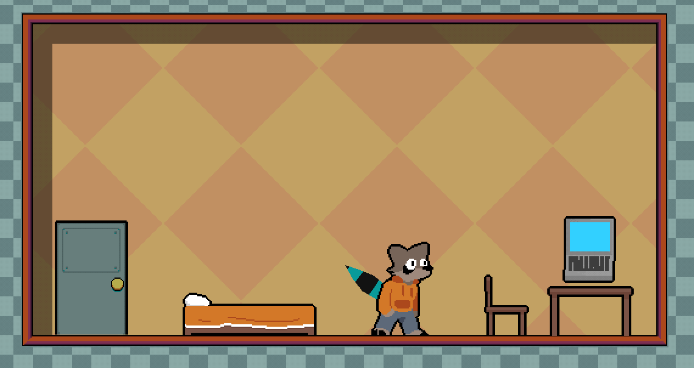
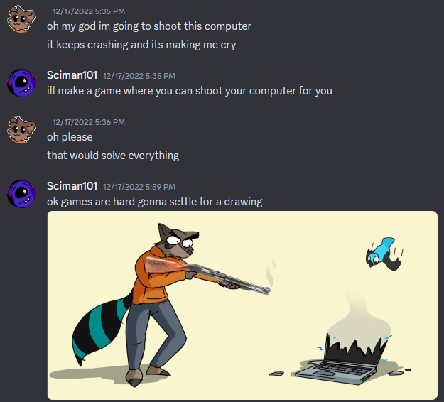
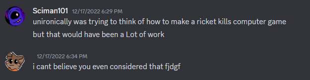

I made a new game! You can download it from itch.io here.
Ricket's Computer Trouble is the first game I've released since... Vessel Garden, back in January 2023, good lord. I've worked on game project since - prototypes, mostly, but I'd started worrying that maybe I just wasn't cut out for this hobby anymore. I was doubting my abilities, and it was really getting to me.
So, I vowed to put everything else aside and just finish something. A small (though scope creep reared it's ugly head) game I could get done in a month ish (it took two). This is the result of that, and I wanted to go over some of what I learned while working on it.
(Light spoilers below! Nothing crazy - the game is pretty small, but you've been warned!)
The concept
The first question you might have is why I made a game about a furry going around shooting laptops with a shotgun.
Torcado is one of the most incredible gamedevs I know, and I'm fortunate to have him as a friend of mine. One time in his Discord, for a project, his laptop kept running into problems and slowing him down. I drew the pic up above as a bit, but wasn't kidding about the game idea.
When the time came to come up with a small project to finish something again - it seemed like a good chance to dust the silly idea off and make something of it.
The biggest problem was - what do I do to gamify such a silly concept. At first I was imagining some kind of boss battle against a giant laptop, almost Cuphead style. But I came up with the movement mechanics using the shotgun, and decided something that let the player expore that made more sense. I landed on a Smash. Bros style 'smash the targets' game - originally meant to be a single scene, it expanded into multiple rooms later on.
Art
Lately, I've been on a kick with the binary brush, which draws blobs of color with zero antialiasing. It's fun to use in full res drawings, and at lower resolutions it's functionally just pixel art, so I wanted to give that a spin for this.
I drew most of the characters in Clip Studio Paint at a higher res to start, then downscaled them in Aseprite before cleaning them up and animating them.
 The origninal mockup for Ricket
The origninal mockup for Ricket
The hands and shotgun were kept disembodied to make them easier to animate. At the small size of the sprites, you don't really notice it, anyways.
Level Design
Aside from 'finishing things', my other goal with this project was to sharpen my level design skills.
Level design is, as it turns out, hard! My brain really prefers making systems that can interact with one another, way more than making the spaces those systems inhabit. I wouldn't be shocked if this is why stuff like rougelikes/lites and procgen appeal to me - make the fun parts, then write some code to actually build the game out of it.
But, it's an important skill nonetheless, and some practice wouldn't hurt. The last game I really did level design for was Vinekid - which I still think is a really good game, but the level design can be a pretty weak at parts.
RCT is by no means perfect in that regard, but I think it's an improvement. I tried to make sure every level felt like there was some substance to it - be it teaching you new mechanics, testing your skills, or giving you a space to experiment in with less of a defined end goal.
This was also a good reminder that the only thing more important than testing your game, is having other people test your game. Most of development happened with me testing to make sure stuff worked, levels were possible, assets looked good - all at my desk, playing by myself. And the longer I did that, the better I got at the game. The hardest levels started to become kinda trivial.
So, when the time came to show it to a friend of mine in person, she got stuck pretty quickly. There were entire mechanics I'd built in I'd forgotten to actually tell the player about, I was so used to them. The difficulty curve of the levels was totally off, and in the end my friend seemed a bit frustrated at the whole thing.
This is a stumbling block I've run into before. Tussle Punks, my big ambitious platform fighter project, was always tested solo. By me. Which is kind of an issue for a multiplayer game.
The good news is, I was able to use feedback from the friends playtest to make some improvements, and the next time I showed it to someone they seemed to like it a lot more. I'm hoping to be able to take future games to events or little get togethers to try and gather more feedback - we'll have to see!
Super Duper Shotgun Mode
Most of the time I was trying to actually finish the game, y'know, the whole point of this project. But now and then I'd goof off a little. At one point I made a sprite of the shotgun with 3 more shotguns duct-taped onto it that fired 4 shots at once, inspired by the Stacked Shotgun from the DOOM 2 mod.
 Was really tempted to keep the programmer art DOOR in tbh
Was really tempted to keep the programmer art DOOR in tbh
I intended for it to just be a one off joke, but people wanted to see it in the final game - and like, of course they would, who was I kidding. So for the final game I quickly threw together an updated version with better graphics and tied it to completion. If you beat the game once, a checkbox shows up on the main menu to turn it on.
I also turned the recoil up by 2x. You'd think 4x would make more sense, but the game was borderline unplayable, with Ricket launching across the entire map every shot.
Making this kind of dumb nonsense is one of my favorite parts of gamedev, I need to do stuff like it more often.
Conclusion
This was fun! Like most projects, it was most exciting at the start and, as time went on, my interest kinda drained until the last burst of getting it out there. That feels like how these sorts of things tend to go - the last 10% if 90% of the work, and all - and it's a big part of why I need the practice. My brain is overflowing with ideas for projects, and as fun as daydreaming about them can be, it doesn't count for much if I can't realize them.
I'm also still trying to keep my expectations in check. Just because I did this doesn't mean I should rush back into some massive dream game project - I'm pretty sure the last time I tried that it burned me out, hard. I'm gonna try and work on more small-scale projects like this one. Exercise the 'finishing projects' muscle, as it were.
Until then, thanks for reading! I hope you found something interesting here, and I hope you enjoy the game!